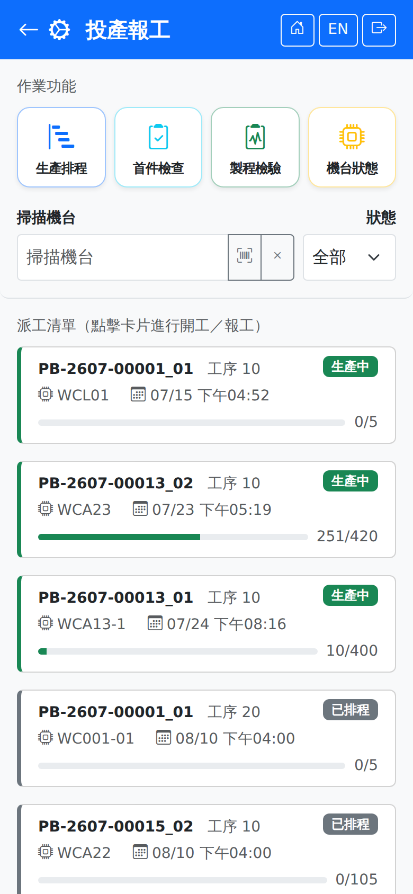

投產報工Production
登入後從首頁點「投產報工」進入。畫面分成上下兩塊：上方是「作業功能」捷徑，下方是派工清單。要對某一張派工開工或報工，請從下方清單點該張派工的卡片；捷徑列上沒有開工與報工，因為這兩項必須指定是哪一張派工。Tap "Production" on the home page after logging in. The screen has two parts: the "Operations" shortcuts at the top and the dispatch list below. To start work or report against a dispatch, tap its card in the list; starting and reporting are not on the shortcut bar because both have to be done against a particular dispatch.

作業功能捷徑Operation shortcuts
四個捷徑會依角色的手機作業權限逐一顯示或隱藏；四個都沒有權限時整區隱藏。取不到權限時（連不上伺服器）也會整區隱藏——這是刻意的，寧可少一個入口，也不要讓人點進去才被拒絕。The four shortcuts appear or disappear one by one according to the role's mobile permissions, and the whole area is hidden when none of the four is granted. It is also hidden when the permissions cannot be read (the server cannot be reached) — that is deliberate: better one entry point missing than tapping in only to be refused.
| 捷徑Shortcut | 說明Guide |
|---|---|
| 生產排程Schedule | 以工作中心與機台分組的排程看板，另有排程查詢與生產準備看板兩個入口。A schedule board grouped by work center and machine, with entry points to schedule query and the preparation board. |
| 首件檢查First Article | 列出待首件的派工，備料完成後、正式開工前執行。Lists dispatches awaiting first-piece inspection, done after setup and before production starts. |
| 製程檢驗In-Process QC | 列出生產中的派工，供品管在製程中抽驗。Lists dispatches in progress for QC to sample during the process. |
| 機台狀態Machine Status | 掃碼異動單一機台的狀態（故障、保養、待機等）。Scan a machine and change its status (breakdown, maintenance, standby and so on). |
篩選派工Filtering the list
篩選只影響清單顯示，不會改變任何資料。Filtering only changes what is listed; it never changes any data.
派工狀態Dispatch status
卡片右上角的徽章即派工目前狀態。手機端只列出現場會遇到的狀態：The badge at the top right of each card is the dispatch's current status. Only the statuses the shop floor actually meets are listed here:
| 狀態Status | 說明Guide |
|---|---|
| 待排程Pending | 尚未排入機台，現場看不到可執行的動作。Not yet scheduled onto a machine; there is nothing for the floor to do yet. |
| 已排程Scheduled | 已排定機台與時段，可開始備料。A machine and time slot are set, so setup can begin. |
| 備料中Setup | 已按「開始備料」，備料工時計時中。"Start setup" has been tapped and setup time is being clocked. |
| 備料完成Ready | 備料已完成，可以開工（若需首件，須先通過 FPI）。Setup is done and work can start (if first-piece inspection is required, FPI has to pass first). |
| 待首件Pending FPI | 等待首件檢查合格，合格後才放行開工。Waiting for the first-piece inspection to pass before work is released. |
| 生產中In Progress | 已開工，可報工。Work has started and production can be reported. |
| 暫停On Hold | 因機台停用、首件或製程檢驗不合格而暫停，無法作業。機台停用造成的會在機台恢復時自動恢復；檢驗不合格請聯繫品管。Paused because the machine is down or a first-piece or in-process inspection failed, so no work can be done. A hold caused by the machine resumes automatically when the machine is back; for an inspection failure, contact QC. |
| 完工Closed | 累計良品數已達派工量，派工自動結案。The cumulative good quantity has reached the dispatched quantity and the dispatch closed automatically. |
斷線時When the connection drops
派工清單需要連線才載得出來，連不上時顯示「需要連線」。畫面左下角若出現「N 筆待同步」的徽章，代表手機上還有斷線時暫存、尚未送出的作業；恢復連線後會自動送出，也可回首頁點「立即同步」。紅色徽章表示有失敗或「待確認」（暫存超過 30 分鐘）的項目，請到首頁的待送出清單處理。詳見斷線保護。The dispatch list needs a connection to load; when the server cannot be reached it says "Connection required". A "pending sync" badge at the bottom left means the phone still holds entries saved during a disconnection that have not been sent yet; they go out automatically once the connection is back, or you can tap "Sync Now" on the home page. A red badge means some items failed or "Need confirmation" (saved for more than 30 minutes) — deal with them in the waiting list on the home page. See Disconnection protection.